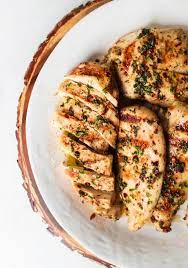

Italian Chicken Marinade

Description:
This Italian Chicken Marinade is a pantry friendly, low effort, high reward recipe for zesty, herbaceous, unabashedly flavorful, juicy chicken every time.
The marinade is a balanced tangy, savory blend of olive oil, red wine vinegar, balsamic vinegar, lemon juice, pantry Italian herbs and spices – and the secret ingredient – PESTO – that inject the chicken with loads of effortless flavor.
And the best part of this recipe? The marinade does ALL THE work! Come dinner time, just cook the Italian Chicken on the grill, oven or stovetop.
The Italian Marinated Chicken is stand-alone scrumptious with roasted asparagus and risotto, pasta, or mashed potatoes or in salads, wraps, or sandwiches.
Any way you serve this Italian Chicken will be a fresh, vibrant win!
Ingredients:
- 1 (16 ounce) bottle Italian-style salad dressing
- 1 teaspoon garlic powder
- 1 teaspoon salt
- 4 skinless, boneless chicken breast halves
Steps:
- Whisk salad dressing, garlic powder, and salt together in a shallow baking dish; add chicken breasts and turn to coat. Cover the dish with plastic wrap and marinate in the refrigerator, 4 hours to overnight.
- Preheat an outdoor grill for high heat and lightly oil the grate.
- Remove chicken from marinade and shake off excess; discard remaining marinade.
- Cook chicken on the preheated grill until no longer pink in the center and the juices run clear, about 7 to 8 minutes on each side. An instant-read thermometer inserted into the center should read at least 165 degrees F (74 degrees C).